판금제관기능장 (2004-04-04 기출문제)
1과목: 임의 구분
1. 다음 중 망치 작업시 주의사항으로 옳은 것은?
- 슬래지 해머(sledge hammer)를 사용시는 보안경을 쓴다.
- 드레스(dress)시에는 상온에서 공냉처리하여 연성을 부여한다.
- 보조 해머를 사용시 손목의 충격을 방지하기 위해 가볍게 움켜쥔다.
- 망치 표면은 산화를 방지하기 위해 오일을 묻혀 사용한다.
(정답률: 82%)

2. 플랜지(flange)가 있는 판을 주름을 만들지 않고 또 표면에 흠이 없게 원호 모양으로 구부리는 기계는 ?
- 프레스 브레이크(press break)
- 탄젠트 벤더(tangent bender)
- 앵글 벤더(angle bender)
- 파이프 벤더(pipe bender)
(정답률: 92%)
3. 원형으로 된 윗날과 아랫날을 회전시켜 판재를 직선이나 원형 및 임의의 곡선으로 전단하는 기계는?
- 서어큘러 시어
- 갱 슬리터
- 스퀘어 시어
- 갭 시어
(정답률: 알수없음)
4. 펀치(Punch)와 다이(die)를 사용하여 연강이나 순철을 전단할 때 보통 판두께에 대한 틈새 (clearance)값으로 옳은 것은?
- 1~3%
- 3~6%
- 6~9%
- 9~12%
(정답률: 70%)
5. 스프링 백(spring back)의 양이 커지는 것과 관계 없는 것은?
- 탄성한계가 높을수록
- 구부림 반지름이 클수록
- 소성이 큰 재료일수록
- 강도가 높을수록
(정답률: 60%)
6. 최소 굽힘 반지름에 대하여 설명한 것 중 틀린 것은?
- 재료에 균열이 생기지 않게 하고 굽힐 수 있는 최소의 굽힘 반경이다.
- 판두께가 두꺼울수록 커져야 한다.
- 판의 나비가 좁을수록 커져야 한다.
- 압연방향과 직각인 방향의 경우가 적어진다.
(정답률: 알수없음)
7. 두께 25mm의 판재로 그림과 같이 가공하고자 한다. 중립면 이동계수를 0.45로 할때 필요한 소재의 길이는 얼마인가 ? (단,중립면 이동계수 K값은 0.45로 한다.)
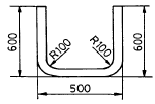
- 1549
- 1565
- 1590
- 1675
(정답률: 64%)
8. 전단가공을 한 제품의 전단면을 바른 치수로 다듬질을 하거나 아름답지 못한 단면을 매끈한 면으로 다듬질 하는 작업은 ?
- 전단(shearing)
- 펀칭(punching)
- 셰이빙(shaving)
- 블랭킹(blanking)
(정답률: 알수없음)
9. 두 판재를 겹치기로 리벳팅했을 때 적당한 리벳 지름을 계산하는 공식은? (단, σt는 판재의 인장응력, p는 피치, W는 1피치 마다의 하중, t는 강판의 두께, d는 리벳의 지름)
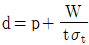
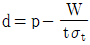
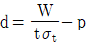
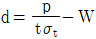
(정답률: 알수없음)
10. 교류 아크(arc)가 직류 아크(arc)보다 불안정한 주된 이유는?
- 전류값이 1사이클에 2번 0이 되기 때문이다.
- 전류값이 직류가 높기 때문이다.
- 직류보다 교류가 전압이 낮기 때문이다.
- 자기쏠림(arc blow)현상이 일어나기 때문이다.
(정답률: 80%)
11. 교류아크 용접에서 핫스타트(hot start) 장치에 대한 이점으로 틀린 것은 ?
- 블로우 홀(blow hole)를 방지한다.
- 비드 모양을 개선한다.
- 아크 발생 초기의 비드용입을 양호하게 한다.
- 전류 조정을 용이하게 한다.
(정답률: 알수없음)
12. 일렉트로 슬래그(electro slag)용접은 다음 중 어느 용접에 가장 적합한가?
- 엷은 판재의 용접
- 두꺼운 판의 용접
- 재질이 서로 다른 판의 용접
- 플라스틱 용접
(정답률: 80%)
13. 다음 그림의 기호에 해당되는 관이음 표시방법은?
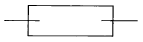
- 플렉시블 커플링
- 신축 관 이음
- 리듀서
- 하프 커플링
(정답률: 77%)
14. 현도장에서 사용되는 기구로만 짝지어진 것은 ?
- 강재줄자, 곡자, 수준기
- 접자, 목공도구, 스냅
- 직각자, 드리프트, 추
- 비임컴퍼스, 먹통, 벤딩핀
(정답률: 알수없음)
15. 그림과 같은 형강을 표기하는 방법이 바르게 된 것은?
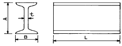
- I AxBxt - L
- I BxAxt - L
- I txAxB - L
- L - txBxA - I
(정답률: 69%)
16. 그림과 같은 원추를 계산식으로 전개하면 전개도에서 θ는 몇도가 되는가? (단, 원추의 반지름 R = 30mm,높이 H = 40mm)
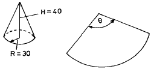
- 108°
- 120°
- 180°
- 216°
(정답률: 93%)
17. 스테인리스 클래드 강판(stainless clad steel sheet)의 제품 기호 "SB42 + STS316L - R 1F"에서 "R"은 무엇을 나타내는가?
- 클래드강의 종류 기호
- 모재의 종류
- 접합재의 종류
- 클래드강의 접합상태의 등급 기호
(정답률: 알수없음)
18. 일반적으로 강판을 두께에 따라 구분할 때 후판은 몇 mm이상으로 하는가 ?
- 1.5
- 3.0
- 6.0
- 15.0
(정답률: 알수없음)
19. 다음 그림은 금속재료의 어느 성질을 나타낼 때 사용하는 도표인가 ?
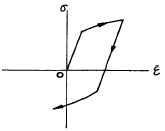
- 시효(aging)
- 질량 효과(mass effect)
- 바우싱거 효과(bauschinger effect)
- 가공 경화(work hardening)
(정답률: 알수없음)
20. 금속재료를 냉간 가공하면 그 성질이 변하게 되는데 틀린 것은 ?
- 인장강도가 증가한다.
- 연신율이 증가한다.
- 경도가 증가한다.
- 항복점이 높아진다.
(정답률: 60%)
2과목: 임의 구분
21. 압력용기의 재료는 다음 항을 고려하여 택하되 탄성한도가 크며, 질긴 재료이어야 한다. 관계가 먼 것은 ?
- 유체의 양
- 유체의 종류
- 유체의 성질
- 유체의 압력
(정답률: 알수없음)
22. 다음표를 보고 A공장의 천인율(千人率)을 계산하면 어느 것인가?
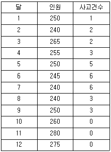
- 122
- 112
- 102
- 92
(정답률: 알수없음)
23. 결정입자의 미세화 또는 열처리에 의하여 경화된 재료의 완전 연화를 목적으로 A1 또는 A3변태점 이상 30 ~ 50℃ 범위로 일정한 시간 가열하여 조직을 미세한 오스테나이트로 변화시킨 다음 서냉시키는 열처리는?
- 완전 풀림
- 연화 풀림
- 확산 풀림
- 구상화 풀림
(정답률: 알수없음)
24. 다음 중 항온 열처리의 종류가 아닌 것은?
- 마템퍼링 (martempering)
- 마퀜칭 (marquenching)
- 마어닐링 (marannealing)
- 오스템퍼링 (austempering)
(정답률: 47%)
25. 탄소강을 담금질할 때 내외부가 냉각속도에 따라 담금질 효과가 다르게 나타나는 현상을 무엇이라 하는가 ?
- 질량효과
- 오스템퍼
- 담금균열
- 노치효과
(정답률: 알수없음)
26. 다음 중 드릴링 머신(drilling machine)으로 할 수 없는 작업은?
- 카운터 보링(counter boring)
- 카운터 싱킹(counter sinking)
- 리밍(reaming)
- 키 홀(key hole)
(정답률: 알수없음)
27. 프레스에 의한 전단가공 중 펀치로 찍어내고 남는 것이 제품이되는 가공은 ?
- 블랭킹
- 펀칭
- 노칭
- 셰이빙
(정답률: 알수없음)
28. 연강판의 두께가 2mm인 재료를 블랭킹(blanking)하고자 한다. 블랭킹한 제품의 지름이 18mm로 하고자 하면 펀치의 지름은 몇 mm로 하여야 적당 하겠는가?
- 18
- 17.82
- 17.68
- 16
(정답률: 62%)
29. 손작업으로 보기와 같은 제품을 만들때 알맞는 순서는 ?
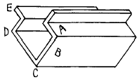
- A,B,C,D,E
- A,E,B,C,D
- A,E,B,D,C
- C,A,E,B,D
(정답률: 91%)
30. 굽힘부의 판길이 200mm, 판두께 1.2mm의 강판을 프레스에 의한 V굽힘하려고 한다. 다이의 어깨 폭이 8t이고 상수 C = 1.33일때 가공력은 몇 ton 인가? (단, 강판의 인장 강도는 40 kgf/mm2이다.)
- 1.6
- 2.8
- 3.2
- 4.5
(정답률: 40%)
31. 두께 2mm의 연강판으로 외경이 100mm인 원통을 만들 때 마름질할 판의 길이는 몇 mm 인가?
- 320.0
- 314.0
- 307.8
- 310.0
(정답률: 알수없음)
32. 보기와 같은 원통형 드로잉 제품에 대한 소재의 직경(Ｄ)를 구하기 위한 식은 ? (단,모서리가 예리할 경우)
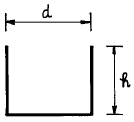
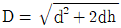
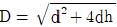
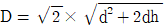
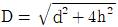
(정답률: 알수없음)
33. 다음 그림과 같이 겹댐판을 사용하여 리벳작업을 하고져 한다. 모재 두께가 15mm 철판이면 겹댐판의 두께는 몇 mm 철판을 사용하여야 하겠는가?
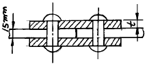
- 6mm
- 9mm
- 12mm
- 15mm
(정답률: 알수없음)
34. 다음중 용제나 가스의 고온기류없이 용접할 수 있는 접합방법은 무엇인가 ?
- 테르밋 용접(thermit welding)
- 서브머어지드 아아크 용접(submerged arc welding)
- 가스 압접(pressure gas welding)
- 마찰 용접(friction welding)
(정답률: 알수없음)
35. 다음과 같은 물체는 어떤 전개방법을 선택하는 것이 가장 좋은가?
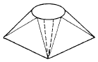
- 평행선 전개법
- 삼각형 전개법
- 방사선 전개법
- 상관선 전개법
(정답률: 70%)
36. 구리에 60 ~ 70% Ni을 첨가한 내열.내식성 합금으로서, 기계적 성질과 화학적 성질이 우수하여 과열 증기 밸브, 열기관 부품, 화학기계 부품 등에 많이 쓰이는 재료는 ?
- 콘스탄탄(constantan)
- 모넬 메탈(monel metal)
- 브리타니아 메탈(Britania metal)
- Y합금
(정답률: 알수없음)
37. 일반용 냉간 압연 강판의 기호는 어느 것인가 ?
- SHP
- SPCC
- SSP
- SBHG
(정답률: 70%)
38. 다음 금속의 성질 중 기계적 성질에 속하는 것은 ?
- 마모성
- 비중
- 열전도성
- 내열성
(정답률: 알수없음)
39. 원자의 미끄럼이 어떤면을 경계로해서 한쪽의 결정이 회전을 일으키고 다른쪽의 회전을 일으키지 않는 결정과 그면에서 대칭으로 되는 변형을 무엇이라 하는가?
- 쌍정(twin)
- 방향성
- 전위(dislocation)
- 슬립(slip)
(정답률: 알수없음)
40. 공작물을 범용 마이크로 미터로 측정하였더니 다음 그림과 같이 측정 되었다. 그 측정값은 얼마인가?
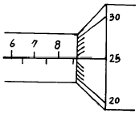
- 8.25mm
- 8.75mm
- 10.5mm
- 8.525mm
(정답률: 70%)
3과목: 임의 구분
41. 절단기에서 절단작업을 2인 이상이 할 경우 안전에 특히 유의할 점은 ?
- 서로 상의하여 치수를 맞춘다.
- 절단된 재료가 소정의 모양인가 조사한다.
- 페달을 밟는 사람을 정한다.
- 절단기 용량 내에 있는 두께의 판을 절단하도록 한다
(정답률: 알수없음)
42. 다음 그림과 같이 외경 60mm 파이프를 사용하여 구조물을 제작시 소요되는 길이(L)은 몇 mm 인가? (단, 가공에 의한 여유길이는 무시한다.)
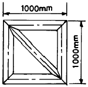
- 약 5000
- 약 5330
- 약 5414
- 약 5060
(정답률: 알수없음)
43. 나사를 결합용과 운동용으로 분류할 때 운동용 나사에 해당하는 것은?
- 둥근나사
- 미터나사
- 유니파이나사
- 사각나사
(정답률: 90%)
44. 요철이 서로 반대인 한쌍의 다이 사이에 얇은 판재를 넣고 압축력을 가하여 제품을 성형 가공하는 방법은?
- 업세팅
- 엠보싱
- 코이닝
- 스웨이징
(정답률: 82%)
45. 다음 해머 중 찌그러진 판재의 펴기작업에 주로 쓰이는 해머는?
- 볼핀해머
- 셋팅해머
- 레이징해머
- 범핑해머
(정답률: 알수없음)
46. 리벳이음의 작업과정이 순서대로 나열된 것은?
- 리벳뽑기 → 리벳끼움 → 리벳구멍 채우기 → 머리가공 → 완성가공
- 리벳끼움 → 리벳뽑기 → 리벳구멍 채우기 → 머리가공 → 완성가공
- 리벳구멍 채우기 → 리벳뽑기 → 리벳끼움 → 머리가공 → 완성가공
- 리벳뽑기 → 리벳끼움 → 머리가공 → 리벳구멍 채우기 → 완성가공
(정답률: 알수없음)
47. 이음의 전길이에 걸쳐 건너뛰어서 비드를 놓는 방법으로 변형, 잔류응력이 가장 적게되며 용접선이 긴 경우에 적당한 용착방법은?
- 전진법
- 후진법
- 대칭법
- 스킵법
(정답률: 알수없음)
48. 기계제도에서 3각법으로 입체를 투상시 입체의 높이가 나타나지 않는 투상도의 명칭은?
- 정면도
- 배면도
- 저면도
- 측면도
(정답률: 82%)
49. 판금제관용 공구 중에서, 약 300∼500mm 정도의 크기로 앤빌(anvil) 대용으로 사용하기도 하며, 또 여러 가지 모양의 이형 구멍이 있어서 조형작업용으로 사용되는 것은 무엇인가?
- 스테이크 (stakes)
- 스웨이지 블록 (swage block)
- 받침판 (bench plate)
- 바 폴더 (bar folder)
(정답률: 알수없음)
50. 제관용 강판의 내식성 및 내구성을 향상시킬 목적으로 특수 피복강판이 사용된다. 다음 중 특수 피복강판이 아닌 것은?
- 크로메이트(chromate) 강판
- 스테인리스 클래드(stainless clad) 강판
- 착색아연(coloring galvanize) 강판
- 규소(silicon) 강판
(정답률: 70%)
51. 기둥의 단면형상 등 모든 조건이 동일할 때 기둥을 지지하는 방법 중에서 좌굴하중이 가장 큰 경우는?
- 일단고정 타단자유의 기둥
- 양단회전(핀)인 기둥
- 일단고정 타단회전(핀)인 기둥
- 양단고정인 기둥
(정답률: 60%)
52. 선반을 사용하여 소재(판재)를 다이와 함께 회전시켜, 외측에서 소재(판재)를 다이의 외부에 눌러서 성형하는 가공방법은?
- 슬리팅(slitting)
- 해 밍(hemming)
- 스피닝(spinning)
- 프레스 벤딩(press bending)
(정답률: 알수없음)
53. 다음 중 단면모양에 따른 형강의 종류가 아닌 것은?
- T형강
- H형강
- F형강
- ㄷ형강
(정답률: 62%)
54. 용접 후 잔류응력 제거를 주목적으로 하는 열처리법은?
- 담금질
- 풀림
- 불림
- 뜨임
(정답률: 알수없음)
55. 샘플링 검사의 목적으로서 틀린 것은?
- 검사비용 절감
- 생산공정상의 문제점 해결
- 품질향상의 자극
- 나쁜 품질인 로트의 불합격
(정답률: 알수없음)
56. 월 100대의 제품을 생산하는데 세이퍼 1대의 제품 1대당 소요공수가 14.4 H 라 한다. 1일 8 H, 월 25일, 가동한다고 할 때 이 제품 전부를 만드는데 필요한 세이퍼의 필요대수를 계산하면? (단,작업자 가동율 80 %, 세이퍼 가동율 90 % 이다.)
- 8대
- 9대
- 10대
- 11대
(정답률: 알수없음)
57. 다음의 PERT/CPM에서 주공정(Critical path)은? (단, 화살표 밑의 숫자는 활동시간을 나타낸다.)
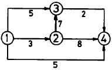
- ① - ③ - ② - ④
- ① - ② - ③ - ④
- ① - ② - ④
- ① - ④
(정답률: 55%)
58. 제품공정분석표에 사용되는 기호 중 공정간의 정체를 나타내는 기호는?
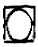
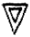
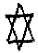
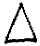
(정답률: 알수없음)
59. T Q C (Total Quality Control)란?
- 시스템적 사고방법을 사용하지 않는 품질관리 기법이다.
- 아프터 서비스를 통한 품질을 보증하는 방법이다.
- 전사적인 품질정보의 교환으로 품질향상을 기도하는 기법이다.
- QC부의 정보분석 결과를 생산부에 피드백하는 것이다
(정답률: 70%)
60. 계수값 관리도는 어느 것인가?
- R관리도
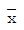
관리도- P관리도
 관리도
관리도
(정답률: 67%)